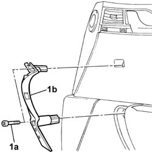
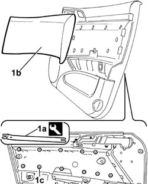
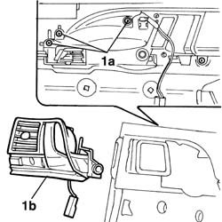

7005C54 Front side door INTERIOR OPENING relay DEVICE (with handle) (one) R.R. for repair or Replace with panel removed
- Path
- Procedures > 70 FITTINGS > 7005 passenger compartment front side doors > 7005C front door lock controls > 7005C54 Front side door INTERIOR OPENING relay DEVICE (with handle) (one) R.R. for repair or Replace with panel removed
- Kind
- repair procedure (removal / refitting; the operation number is the code)
- Applies to
- all engines; all production periods
- Interactive page
- https://sloeber94.github.io/elrnDB-lThss/en/#/79862
Applies to: all engines; all production periods
 Removing
Removing
 Refitting
Refitting1. Undo the bolts (1a) and remove the grab handle (1b).

Applies to: all engines; all production periods
1. Release the trim (1b) from the retaining springs (1c) using the tool (1a).
 | Description | Code | Function |
|---|---|---|---|
1a | Knife | 1.878.077.000 | Removing front door panel cover |

Applies to: all engines; all production periods
1. Undo the fixing bolts (1a) and remove the inner door opening device (1b).

Applies to: all engines; all production periods
Refitting
Removing- Fit the inner door opening device in the housing and secure it to the inner door panel using the bolts.
- Fit the inner door panel trim and secure it using the retaining springs.
- Position the grab handle and tighten the fixing bolts.